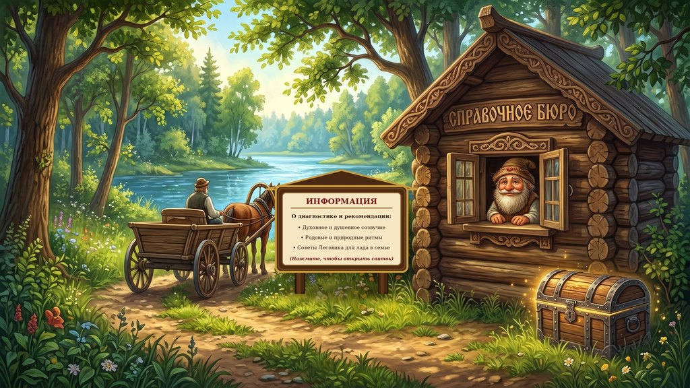

В Диагностике предоставлены те уровни энергетики биополей пары (мужчины и женщины), чувствовать которые интуитивно человек обычно не имеет возможности.
В период романтических встреч цель у каждого: стараться завладеть вниманием партнёра и добиться его.
С момента регистрации брака цели меняются: семейный быт, каждый непроизвольно перестаёт контролировать свои слова и поступки и, неожиданно для партнёра, становится самим собой.
С этого момента характеры у каждого меняются и оба с удивлением обнаруживают, что они разные.
Появляется чувство собственности партнёра : ревность. Ревность указывает на отсутствие любви - это аксиома.
В семейной жизни оба, повязанные мощной цепью (печатью в паспорте) обречены на - минимум - дискомфортную, несчастливую совместную жизнь.
Катастрофа состоит в том, что если брак заключён, то обратного хода уже нет. И никакие психологи и т.д. помочь уже не смогут. Потому что это реакции биополей друг на друга, тех биополей, с которыми люди рождаются и с которыми умирают, т.е. эти параметры биополей неизменны.
В романтических отношениях эти реакции (проблемы) тоже проявляются, но слабо, обычно эти двое стараются их не замечать. А в браке, когда оба непроизвольно становятся самими собой, это явно проявляется, осознаётся обоими, но уже поздно для этих двоих.
ДИАГНОСТИКА показывает: с какими проблемами вы столкнётесь после регистрации брака.
Хотя, если вы доверяете своим чувствам и интуиции, то о перспективах семейных отношений вы сможете догадаться и сами, даже уже в период романтических встреч.
Читайте Диагностику и делайте свой выбор: заключать брак с данным партнёром, или нет. Т.е. нужны ли вам проблемы, которые проявятся в ваших будущих семейных отношениях.
Но если у вас чувство любви к партнёру, а Диагностика указывает на будущие проблемы в семейной жизни, то не усложняйте свою судьбу: не регистрируйте брак. Пройдёт немного времени, и вы сами убедитесь в отсутствии взаимной любви и подтверждения Диагностики.
1. Достаточно понимать, что взаимоотношения в любой семье не управляются желаниями и намерениями этих мужчины и женщины.
2. Эти двое - это химические элементы, реакции между которыми естественно заранее известны, как словно вы читаете об этом в учебнике по химии.
3. Эти реакции сканированы по уровням, для вашего удобства, и вы на каждом этапе видите, где именно проявляются или будут возникать проблемы в этой паре.
4. Но если даже только на одном уровне отмечается проблема во взаимоотношениях, то именно эта проблема, словно гриб трутень на большом красивом здоровом дереве, превратит в труху всё самое хорошее, что есть между этими двумя - это всего лишь вопрос времени.
5. А если проблемы обозначаются сразу на нескольких уровнях, то тем быстрее будет ускорен процесс разлада и уничтожения самых светлых чувств и ожиданий.
6. Нюанс состоит в том, что разрушение отношений начинается только после регистрации брака. Это как нажатие курка на расстрел медовых романтических ожиданий.
7. Если вы рассматриваете себя и своего партнёра, и сканирование показывает проблему на каком-то уровне (уровнях), то энергетика этой проблемы (проблем) превратит вашу личную жизнь в семье, с этим партнёром, в мучение и страдание на долгие годы вашей семейной жизни.
И первое, что нужно сделать - ни в коем случае не активировать негативную энергетику, эту проблему, т.е. не регистрировать брак с этим человеком.
Второе: мудро будет с вашей стороны продолжать романтические отношения, если они уже существуют, пока само собой, естественно не расстанетесь с этим партнёром.
Третье: продолжая романтические отношения (гражданский брак), вы одновременно остаётесь свободными в ожидании своего человека, с которым будете счастливы до конца жизни.
8. Будьте осторожны: энергетика взаимодействия между числами, годами, месяцами - самая сильная и коварная. Если на этих уровнях нет проблем, но есть на других, то легко угодить в ловушку неотвратимой романтической любви. Вам будет казаться, что это ваша половинка, и на всю жизнь, но в браке вас настигнет глубокое разочарование.
Потому что ваша половинка - это зелёный свет на всех уровнях без исключения. Она на этой Земле для вас одна и единственная. И находится не далеко от вас.
9. Если вы видите проблемы на уровнях в семейных парах (не гражданский брак), то вы должны понимать, что каждый из этих двоих находится в пассивном поиске своей половинки.
В своей личной семейной жизни оба они глубоко несчастливы, и помочь им уже неотвратимо невозможно.
Конкретные причины их несчастной жизни будут вами прочитаны в уровнях, где обозначаются их проблемы.
10. Вы увидите: используется система двенадцати созвездий Зодиака (не Эклиптики) и Китайский Зодиак, но год сканируется от 1 января.
11. Держите в вашей памяти: у людей цвет крови - красный. Реже - розовый, ещё реже - голубой, и очень редко - зелёный, или фиолетовый. Это разные виды людей. Родная половинка человека находится только среди людей такого же цвета крови.